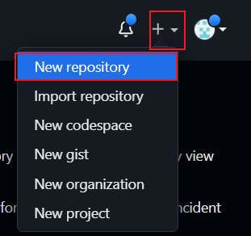
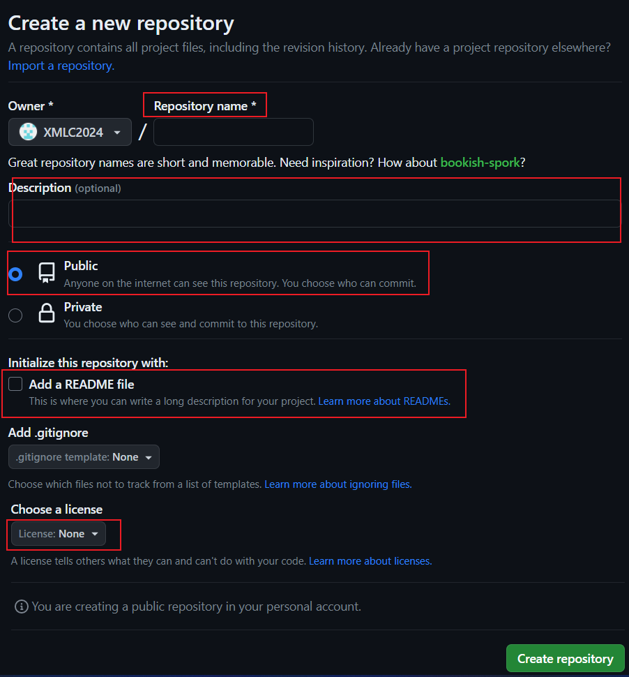

Github - 代码托管平台
或许你可能已经听说过Github,这是一个代码托管平台
本章将从0基础的角度带你认识Github
首先，打开Github - 官网
出现无法访问?
如果出现此情况，请参照以下内容
解决方法
更改hosts文件来解决此问题
hosts文件地址为c:\windows\system32\drivers\etc
并加入以下内容:
1 2 3 4 5 6 7 8 9 10 11 12 13 14 15 16 17 18 19 20 21 | |
出现你没有权限更改此文件问题
请将文件另存到桌面，再重新覆盖
如果你想通过这款软件解决这个问题
请你用微软商店下载后打开加速即可
注册/登录
如果你有账号，点击Sign in,输入账号密码即可。
如果你没有账号，请点击Sign up注册。
注册
如果你正在使用谷歌浏览器
推荐你更换浏览器
因为我在注册时无法启用验证码插件，导致无法注册
多一事不如少一事，你可以在别的浏览器先注册
然后再换回来
[超小声]看不懂英文的看这里:
- Enter your email*: 填写你的邮箱地址
- Create a password*: 创建密码
- Enter a username*: 输入用户名
- Would you like to receive product updates and announcements via email?
Type "y" for yes or "n" for no: 您想通过电子邮件接收产品更新和公告吗？想的话写y,不想写n
- Verify your account : 在下面的验证中点击两个相同方块
按照步骤注册后，点击小绿按钮即可。
存储库
创建新的存储库

-
点击,选择
new repository创建新存储库 -
在进入的界面中，请填写一下信息
-
Repository name:存储库名称这里将是你的存储库名称
若你希望以后建立一个网址
请将他命名为你想要的名称+.github.io -
Description (optional):说明（可选）选填：填写你存储库信息
-
选项:
Public 或 PrivatePublic:公开存储库，所有人可见
Private:私人存储库，只有你可见 -
Add a Readme file在这里可以写关于存储库的详细描述，会保存到主页
-
Add .gitignore选择你的存储库语言
-
Choose a license选择一个条款
-
-
设置完成后，点击[
Create repository]
 注：创建以后自动跳转，不要关闭界面
Github Desktop
没有的人请在Gihub Desktop 下载链接选择自己的版本进行下载
1. 打开Github Desktop，登录账号。
2. 按下 Ctrl+Shift+O 或者在file>clone repository克隆你的存储库。
3. 克隆你的存储库到任意文件夹
这时你已经可以更改存储库了。
提交更改
回到Github Desktop,你可以看到更改:

-> 在下图的位置中，填写描述以及相关更改信息

-> 点击Commit to (分支)

-> 点击下图按钮Fetch更改到存储库。

到此为止，你已经成功提交更改
Github Pages
首先，让我们来介绍优缺点。
优点
免费 : 白嫖佬必备
域名 : 免费提供域名
缺点
访问 : 国内访问较慢
域名 : 免费域名为二级域名
在了解优缺点后，请你慎重选择是否使用Github Pages。
使用要求
首先，确保你的网页源代码在你的电脑上运行没有问题。
主页文件为index.html
如果你自行编写网页源代码，请确保写的正确，并运行时没有问题再提交更改
注意
Github Pages 不接受markdown文件
不要问我为什么要提 问就是有人问我(? doge)
网页开始设置
1、找到你的存储库，点入设置(Settings)
2、在左边侧边栏里找到Pages,点入设置
3、在Branch中选择你提交的分支，若你没做过更改默认为Main
此时，当你再次提交更改，就会刷新网页。